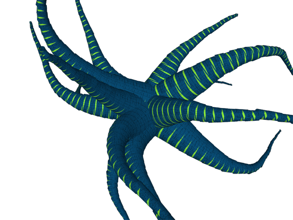
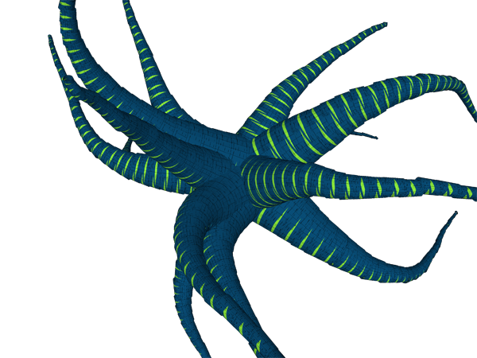
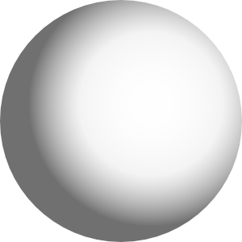
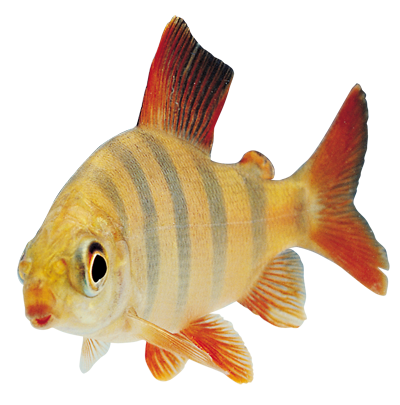
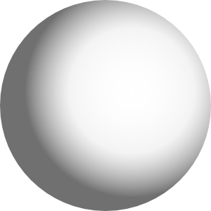
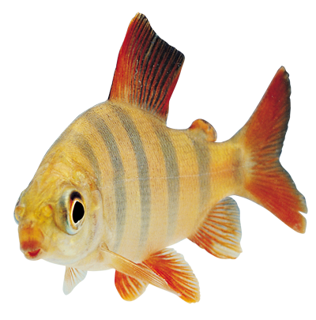

About Me
The first clearly recorded instance of a balloon carrying passengers used hot air to generate buoyancy and was built by the brothers Joseph-Michel and Jacques-Etienne Montgolfier in Annonay, France. After experimenting with unmanned balloons and flights with animals, the first tethered balloon flight with humans on board took place on October 15, 1783.
 

 


